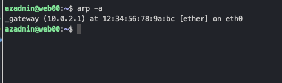

Azure Virtual Network (VNet)
TOC
Introduction
Definition:
- Azure Virtual Network (VNet) is a fundamental component of Microsoft Azure, allowing you to create private networks within the Azure cloud. These networks can be isolated or connected to on-premises data centers, providing a flexible and secure environment for deploying and managing resources. Azure Virtual Network provides the flexibility, security, and scalability needed to build robust cloud-based network infrastructures, supporting a wide range of applications and services.
Key Features:
-
Isolation and Segmentation:
- Create isolated networks for your resources.
- Use subnets to segment the VNet into smaller address spaces for organization and security.
-
Security:
- Implement Network Security Groups (NSGs) to control inbound and outbound traffic.
- Use Azure Firewall for advanced network security.
-
Connectivity:
- Connect VNets to each other using VNet peering.
- Link your VNet to on-premises networks using VPN Gateway or ExpressRoute.
- Enable secure connections to the internet or other Azure services.
-
Scalability and Availability:
- Scale your network by adding or resizing subnets.
- Ensure high availability with Azure’s global infrastructure.
-
Integration with Azure Services:
- Seamlessly integrate with Azure services like Azure Kubernetes Service (AKS), Azure App Service, and Azure Storage.
- Use service endpoints to secure your Azure services within your VNet.
-
DNS and Customization:
- Customize DNS settings for your VNet.
- Use Azure-provided DNS or bring your own DNS servers.
-
Monitoring and Troubleshooting:
- Monitor network performance and security with Azure Monitor and Network Watcher.
- Diagnose and troubleshoot network issues efficiently.
Use Cases:
- Deploying multi-tier applications with web, application, and database layers.
- Extending on-premises networks to the cloud.
- Isolating development, testing, and production environments.
- Ensuring secure access to Azure services.
- In addition to virtual machines, we can deploy more than 32 other services in a VNet.
- Native internal TCP/UDP load balancing and proxy systems for internal HTTP/s load balancing.
- Connect to on-premises networks to form hybrid network architectures.
Difference’s between vNet and On-premises network:
-
Azure vNets do not support layer 2 semantics (only layer-3 and layer-4). This means that concepts such as vLANs and layer-2 broadcast/multicast are not supported. Running
arp -aon a VM in Azure will show that MAC address resolution for VMs in the same subnet results in th esame12:34:56:78:9a:bcvalue. This is because we are on a shared platoform and the vNet is a layer-3 construct.  -
Some protocols and communication types are restricted from being used in Azure vNets. Protocols such as multicast, broadcast, DHCP Unicast, UDP source port 65330, IP-in-IP encapsulated packets, and GRE are not supported.
vNet Naming
- You can have two vNets in an Azure subscription with the same name as long as they are in different resource groups.
Address Spaces
- When creating a VNet, you must specify an address space. This address space is a range of IP addresses that can be used by the resources in the VNet.
- The address space can be either IPv4 or IPv6. However, a vNet cannot be IPv6 only.
- You can create multiple address spaces in a vNet.
- Though, you can use any address space, it is recommended to use a private address space as defined in RFC 1918. (10.0.0.0/8, 172.16.0.0/12, or 192.168.0.0/16)
- You cannot peer vNets with overlapping address spaces.
Peering
- vNET peering allows us to transfer data between vNETs within and across Azure Subscriptions.
- Connect VNETs together using the Azure backbone network so that resources within the subnets can ‘talk’ to each other
- VNETs with overlapping address spaces cannot be peered
- vNET peering is easy to implement, no additional infrastructure is required. Peering can be setup between vNETs within minutes.
- To implement the peering connection, the Network Contributor role or a custom role with the following permissions is required for both the source and destination vNETs:
- Microsoft.Network/virtualNetworks/peer/action
- Microsoft.Network/virtualNetworks/virtualNetworkPeerings/write
- Microsoft.Network/virtualNetworks/virtualNetworkPeerings/read
- vNET peering is not transitive. If vNET A is peered with vNET B and vNET B is peered with vNET C, vNET A and vNET C are not peered.
Connection vNETs using a VPN Gateway
- In addition to peering, another option for connecting vNETs is to use a VPN Gateway connection.
- This option uses an Azure VPN Gateway to create a secure IPSec/IKE tunnel to the target network.
- Unlike peering, traffic is routed over the public internet and not the Azure backbone network.
- Deploying the VPN Gateway takes around 40 minutes.
- When implementing the VPN Gateway to connect two vNETs, there are two connection types that we can use:
- vNET-to-vNET: Connects two vNETs in the same Azure Subscription.
- Site-to-Site: Connects two vNETs in different Azure Subscriptions
- You can use this option to connect vNETs with overlapping address spaces by configuring NAT rules on the VPN Gateway
vWAN Hub
Comparing vNET Peering vs. VPN Gateway vs. vWAN Hub
| Feature | Peering | VNET Gateway | vWAN Hub |
|---|---|---|---|
| Definition | Direct connection between VNets | Connection using a VPN gateway | Connection via Virtual WAN Hub |
| Use Case | Low latency, high-speed connection within the same region | Secure cross-region or hybrid connectivity | Scalable, centralized management of large-scale network architecture |
| Bandwidth | Up to 10 Gbps | Dependent on gateway SKU | Up to 20 Gbps (depending on the hub scale) |
| Latency | Low | Higher due to encryption | Variable, generally higher than peering |
| Encryption | Not supported | Supported | Supported |
| Routing | Manual configuration | Supports BGP, more complex routing | Simplified with centralized control |
| Cost | Lower, based on data transfer | Higher, based on gateway and data transfer | Variable, based on hub and data transfer |
| Scalability | Limited to same region | Cross-region, but limited by gateway scale | Highly scalable for global networks |
| Security | Less secure, no encryption | More secure with encryption | High security with built-in features |
| Complexity | Simple to configure | Moderate complexity | High complexity, but with centralized management tools |
| Cross-Subscription | Supported | Supported | Supported |
| Cross-Tenant | Not supported | Not supported | Supported |
| Redundancy | Depends on setup | High availability supported | High availability and redundancy supported |
| Additional Features | Supports private endpoints and service chaining | Supports VPN, ExpressRoute | Integrated with Azure Firewall, Application Gateway, etc. |
Azure Subnets
Definition
Azure subnets are subdivisions of an Azure Virtual Network (VNet). They help organize and secure your Azure resources by segmenting the VNet into smaller, manageable sections.
Key Features
-
IP Address Range:
- Each subnet must have a unique IP address range within the VNet.
- The address range is defined in CIDR notation (e.g., 10.0.0.0/24).
-
Network Security:
- Use Network Security Groups (NSGs) to control inbound and outbound traffic at the subnet level.
- NSGs can be associated with one or more subnets, defining security rules for the subnet.
-
Routing:
- Subnets can have custom route tables associated with them.
- Custom routes can direct traffic to specific network appliances or on-premises networks.
-
Service Endpoints:
- Enable service endpoints to secure Azure service resources (like Azure Storage or Azure SQL Database) to your VNet.
- Traffic to these services can remain within the Azure backbone network.
-
Integration with Azure Services:
- Subnets can host various Azure resources, such as Virtual Machines (VMs), Azure Kubernetes Service (AKS), and App Service Environments (ASE).
- Subnets can be part of an Azure Availability Zone, enhancing resilience and availability.
- A full list of services that support vNet integration can be found here: Azure Services that support vNet Integration
-
Subnet Delegation:
- Delegate a subnet to specific Azure services to simplify network configuration and management.
- Examples of delegatable services include Azure Container Instances and Azure App Service.
-
Subnet Peering:
- Use VNet peering to connect subnets across different VNets, allowing resources to communicate securely.
- Peered VNets can be within the same region or across different Azure regions (Global VNet Peering).
Best Practices
-
Designing Subnets:
- Plan subnets based on application tiers (e.g., web, application, database) to improve security and manageability.
- Ensure enough IP addresses in each subnet to accommodate future growth.
-
Security:
- Apply NSGs at both the subnet and network interface level for layered security.
- Regularly review and update NSG rules to maintain optimal security.
-
Monitoring and Management:
- Use Azure Monitor and Network Watcher to monitor subnet performance and diagnose network issues.
- Implement logging for NSGs to track and analyze network traffic.
-
IP Address Management:
- Avoid overlapping IP address ranges when peering VNets.
- Use private IP ranges for subnets to ensure secure and efficient routing within Azure.
Use Cases
- Isolating Resources: Segregate different types of workloads or environments (development, testing, production) within a VNet using NSGs.
- Enhanced Security: Apply NSGs to subnets for controlling traffic flow and securing resources.
- Network Organization: Organize resources logically within a VNet for better management and scalability.
- Service Integration: Securely connect Azure services to your VNet using service endpoints or private link.
Facts
- A vNet can have up to 3000 subnets
- Azure reserves 5 IP addreses within each subnet for system use. These addresses cannot be used. The first four and the last IP address cannot be allocated to a resource.
- The first IP address is the network address.
- The last IP address is the broadcast address.
- The next three IP addresses are reserved for Azure services. (Default Gateway and 2 DNS Servers)
- If you need to modify the address space of a subnet that already has resources in it, you must first remove all resources from the subnet.
Azure subnets are essential for structuring your VNet, ensuring security, and managing resources efficiently within your Azure environment.